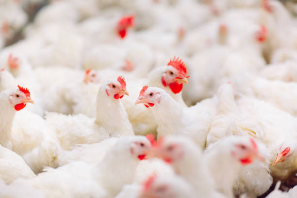
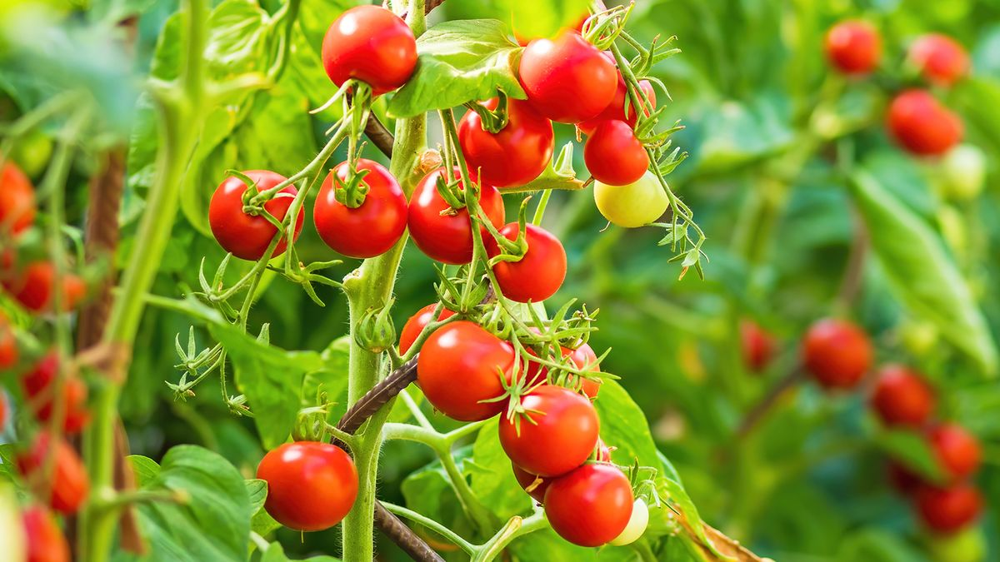
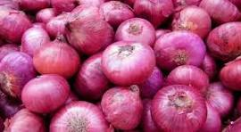
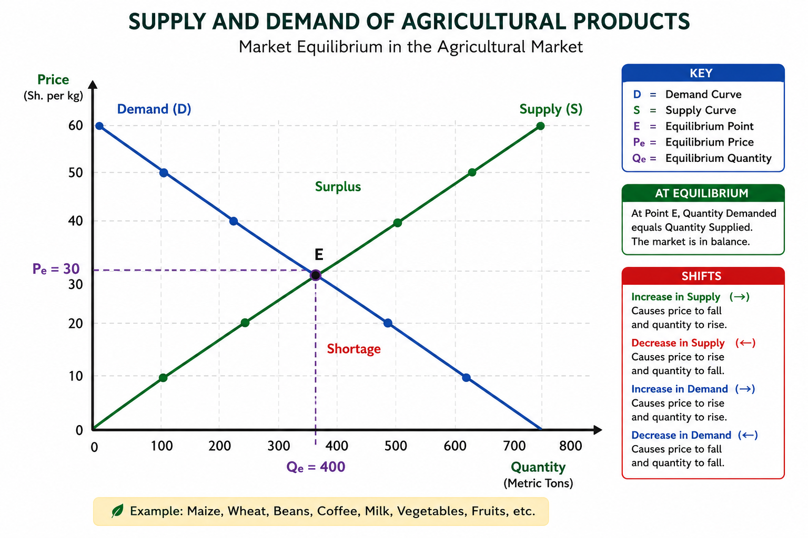

Maize
A major staple food crop used for human consumption, animal feeds, and food processing.
Connecting farmers, students, agribusiness entrepreneurs, and agricultural markets through reliable information and digital solutions.
Discover agricultural products, explore market opportunities, and make informed agribusiness decisions.
Agricultural markets play an important role in connecting producers with consumers. They provide opportunities for farmers to sell their products, access inputs, understand prices, and identify profitable agricultural ventures.
AgriNova provides a platform where farmers, students, and agribusiness entrepreneurs can explore agricultural products, learn about market systems, and understand how agricultural value chains operate.
Discover agricultural products and services across different sectors of the agricultural economy.
Explore grains and other crop commodities.
Explore livestock, milk, eggs, and animal products.
Discover fruits, vegetables, and commercial crops.
Explore processed and packaged agricultural products.
Find farming inputs and agricultural support services.
Explore different agricultural enterprises and understand the products available across the agricultural market.
Major food crops that contribute to food security, household income, and agricultural trade.
A major staple food crop used for human consumption, animal feeds, and food processing.

A drought-tolerant crop used for food, animal feeds, and industrial processing.

A nutritious cereal crop suitable for semi-arid areas and diverse food products.
Livestock enterprises provide food, income, employment, and opportunities for agribusiness development.

Dairy farming provides milk for household consumption, processing, and commercial markets.

Poultry production offers opportunities through egg production, meat, and breeding enterprises.

Small ruminants provide meat, milk, breeding stock, and income opportunities.
High-value crops that create opportunities in local, regional, and international markets.

Tomatoes are widely consumed vegetables with demand from households, retailers, and food businesses.

Onions are important food commodities used in homes, restaurants, and food processing.

Avocado farming offers opportunities in domestic consumption, processing, and export markets.
Agricultural products that undergo processing, preservation, packaging, or other improvements before reaching consumers.

Processed maize flour creates value through milling, packaging, and distribution.

Honey production and packaging provide opportunities through beekeeping and value addition.

Fruit drying helps preserve produce, extend shelf life, and create additional market value.
Products and services that support farm establishment, production, productivity, and sustainable agriculture.

Quality seeds and healthy seedlings are essential for successful crop establishment.

Soil testing and appropriate fertilizer application help farmers manage soil fertility.

Quality animal feeds support livestock nutrition, health, and production performance.
Successful agribusiness requires more than production. Understanding markets, costs, demand, and profitability helps farmers make informed decisions.
Identify potential buyers, understand consumer demand, explore market channels, and evaluate opportunities for different agricultural products.
Understand production costs such as seeds, labour, fertilizers, feeds, transport, and other farm expenses.
Learn how to estimate revenue, calculate total costs, determine gross margins, and assess the profitability of agricultural enterprises.

Understanding agricultural prices and market trends.
Whether you are a beginner farmer, an experienced producer, a student, or an agribusiness entrepreneur, AgriNova is here to help you understand agricultural opportunities and make informed decisions.
Get guidance on farm planning, enterprise selection, production costs, market opportunities, and agricultural business development.
Contact AgriNova